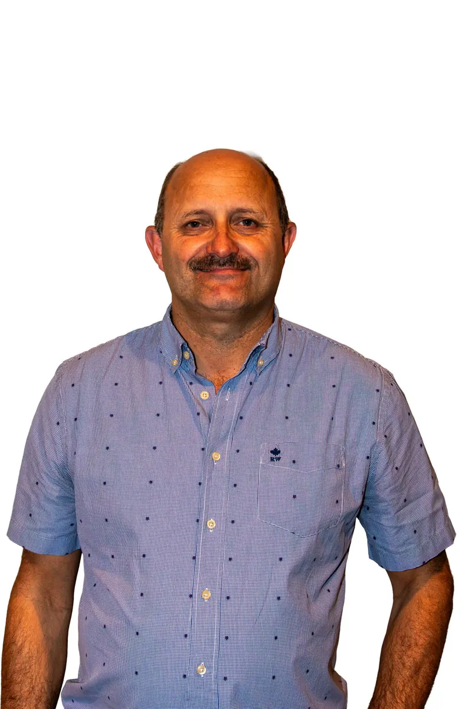
✦Alain Lynneel
Voorzitter · Schepen Torre
Op het podium, achter de schermen en overal daartussen: zonder deze enthousiaste Bredenaars geen revue!
Een bende met goesting, verzameld voor de nieuwe voorstelling. Eén ding is zeker: stilzitten doen ze niet lang.

Onze ploeg samen voor de editie van 2026.
De mensen die de revue mee organiseren en in goede banen leiden. Al loopt er af en toe natuurlijk iets heerlijk uit de hand.

✦Voorzitter · Schepen Torre
Ondervoorzitter · Schepen Sas
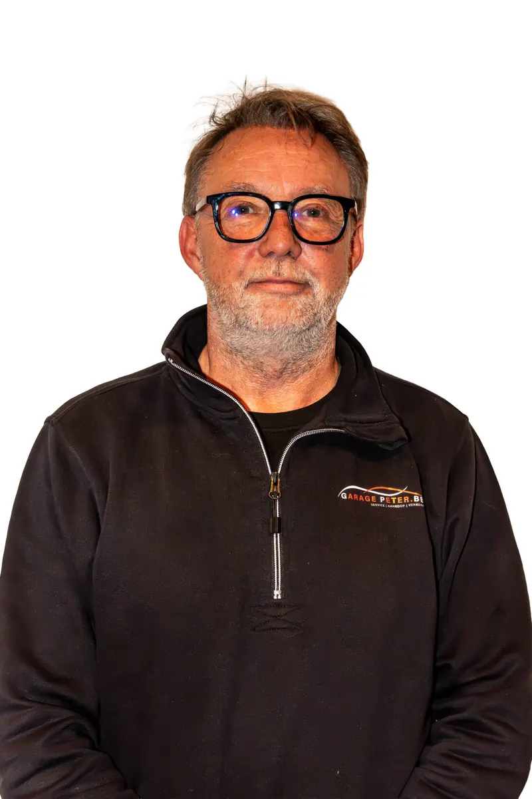
✦Secretaris · webmaster en public relations
Penningmeester · Commissaris
Bestuurslid
Erevoorzitter
De volledige ploeg, in dezelfde volgorde en met de functies zoals vermeld op de bestaande spelerspagina.
Schepen Torre
Schepen Sas
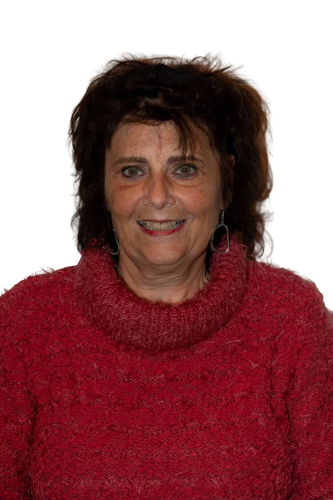
✦Commissaris
Bestuur
Bestuur
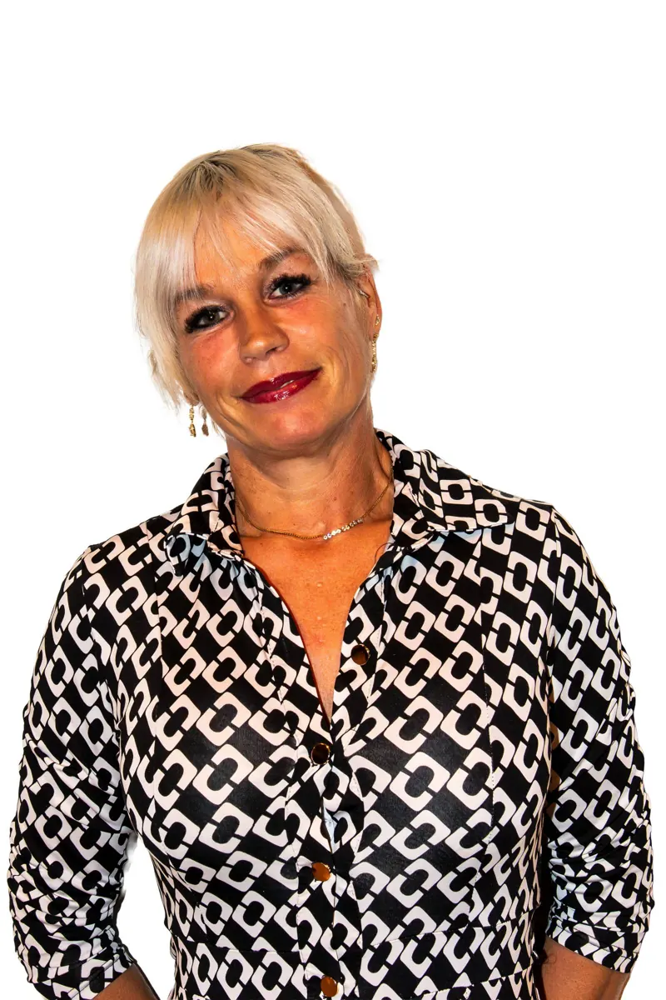
✦Secretaresse
Speler
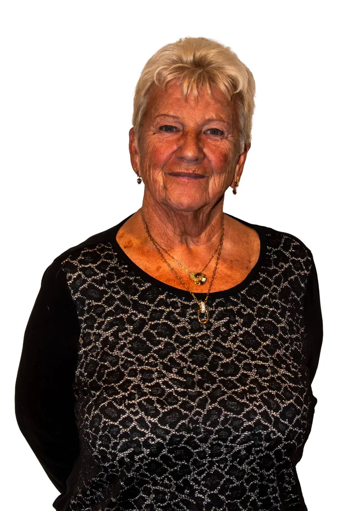
✦Angeline en vaste naaister
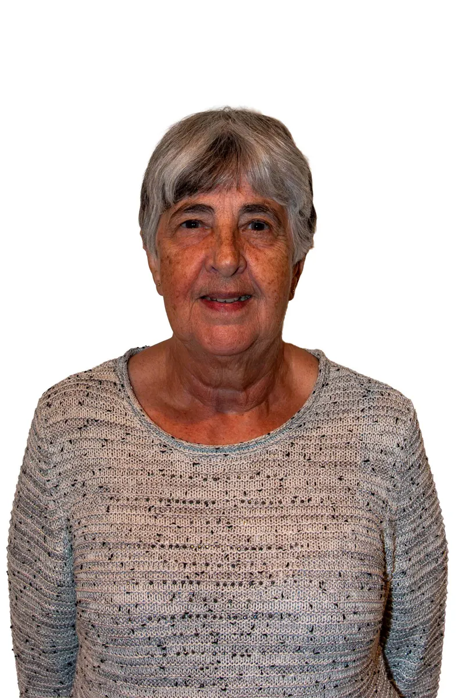
✦Speelster sedert 2008
Speelster
Speler en zanger
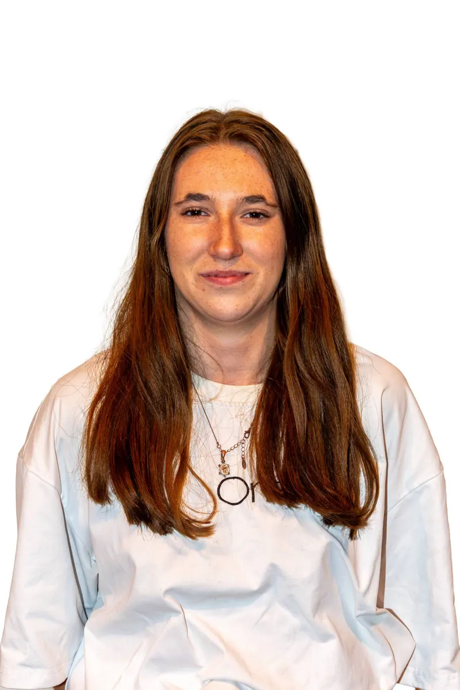
✦Speelster
Speler
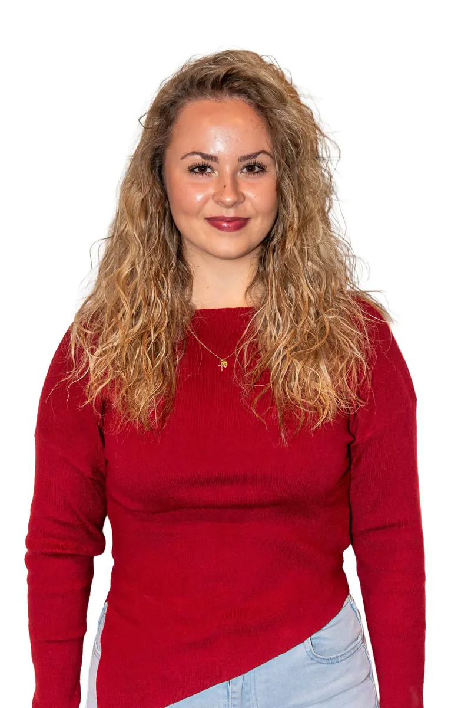
✦Speelster - Dansier
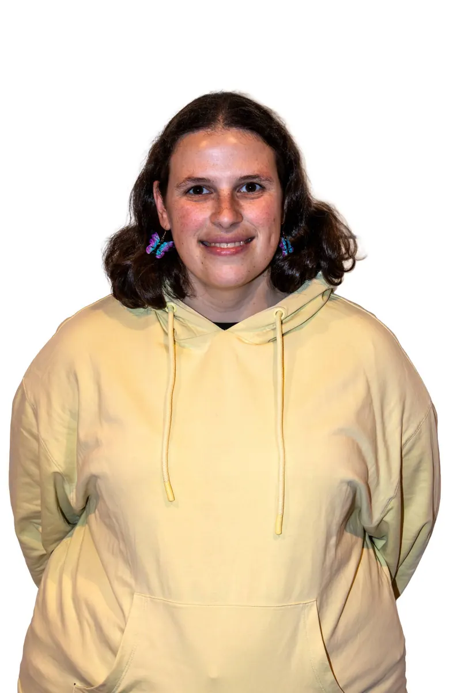
✦Speelster
Speler
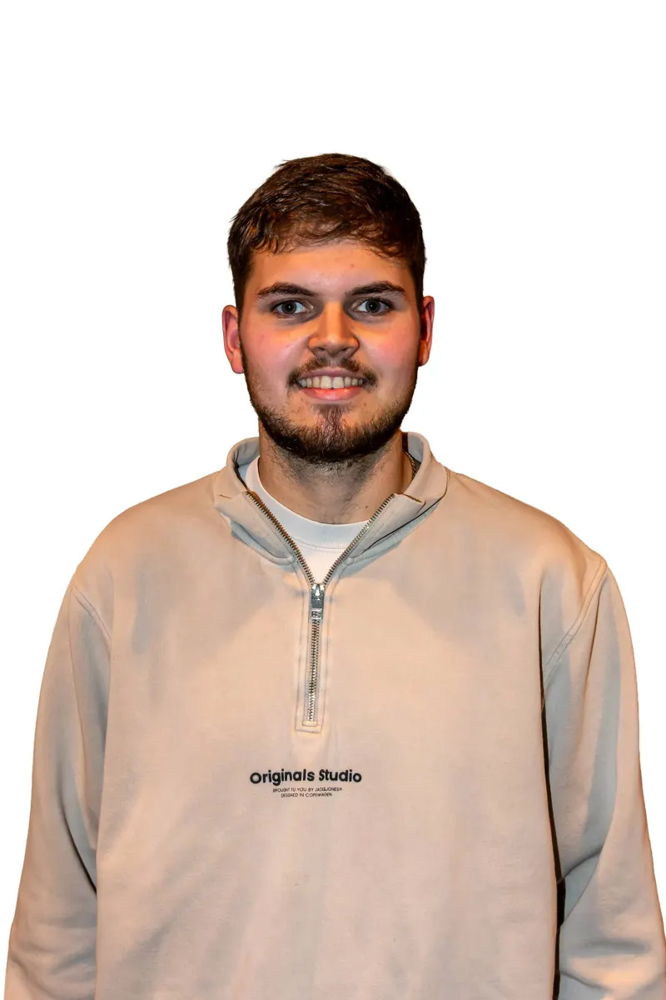
✦Medewerker
Medewerker
Medewerker
Schminkster sedert 2012
Vaste muzikant
Medewerker
Decorman
Medewerker
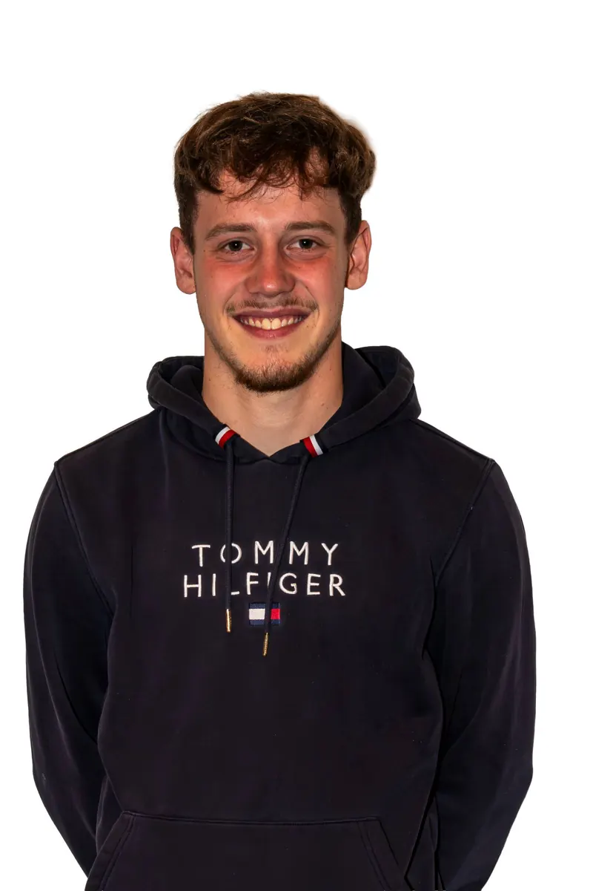
✦Speler
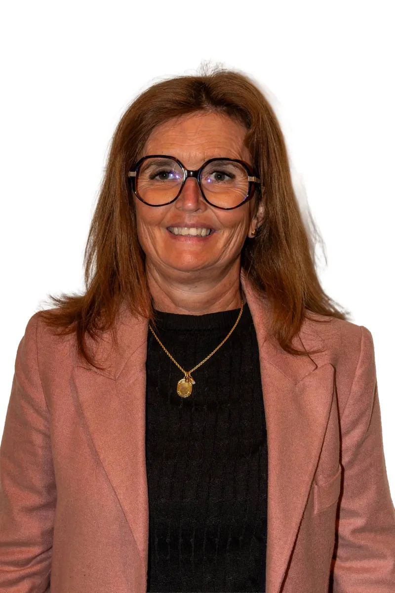
✦Speler
Speler
Speler
Klank en licht
Dansschool Dansier
Dansschool Dansier
Dansschool Dansier
Dansschool Dansier
Medewerker vanaf 2008
Medewerker sinds 2008
Videoman
Huiscartoonist Seamoose